医学文献智能识别与检索系统
医学文献智能识别与检索系统-详情
一、创意描述
文献智能识别与检索系统是一种智能化、多功能的文献管理工具，它通过自然语言处理、图片文字检测、文字识别等技术，实现快速、准确地利用关键词检索文献内容，并支持按照检索命中频次进行排序，以页为单位将结果返回给使用者，避免了人工查看文献，寻找关键信息的复杂操作，提高工作效率和减少重复操作。该系统的目标用户为企业用户、机构等。
二、特色综述
“医学文献智能识别与检索系统”具有以下特点：
\1. 智能化的检索：该系统通过图片文字检测、文字识别、自然语言处理等技术，实现快速从pdf文献数据库中检索出相关文字或图片信息的功能。
\2. 独立数据库：该系统管理员可以批量上传pdf格式文献到数据库，上传以后自动识别文献内容。普通用户不能操作数据库内容，普通用户无需登录即可使用利用关键词检索pdf文献内容，并能以页码为单位在线查看pdf文件或直接下载pdf文件。
\3. 支持多种用户和场景:虽该系统名为“医学文献智能识别与检索系统”，但该系统文字识别模型OCR不仅限于医学领域使用，而是所有pdf文献均能检测与识别，即只需建立不同领域的文献数据库，便可实现文献检索功能。
\4. 简洁友好的界面与操作：该系统分为普通用户与管理员用户。用户可以轻松上手，普通用户无需登录，通过网址进入该系统即可使用文献搜索功能，按网页图标指示查看匹配到的pdf文献或下载该pdf文献。
三、开发工具与技术
“医学文献智能识别与检索系统”为网页端应用，采用前后端分离开发模式，前端采用自适应布局方案，实现电脑端和移动端均能正常使用该系统。
（1）开发工具：Pycharm、Vscode、apipost
（2）开发环境：Ubuntu22.04
（3）测试环境：Mac os vuntera 13.3
（4）部署环境：腾讯云Ubuntu 18.4
（5）开发技术：Vue3、 Vuex、 Axios、 Pyhton3.9、Django、Mysql8、Pytorch11.4-、Elasticsearch8.6、Paddleocr、RabbitMQ
四、功能测试：
4.1 前端界面实现及功能演示
4.1.1 搜索界面
“医学文献智能识别与检索系统”搜索界面如下图所示，普通用户访问域名打开即显示该网页：
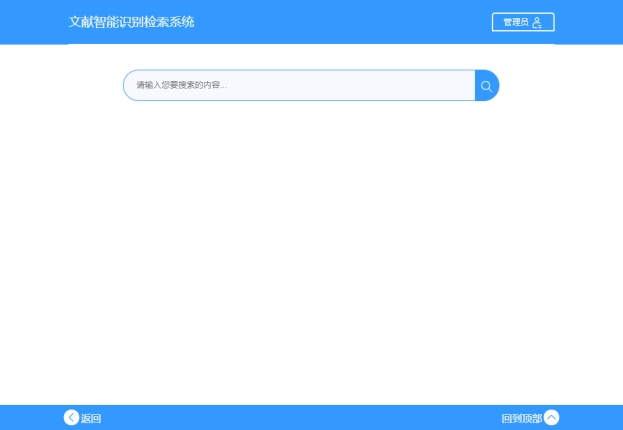
图 4–4 搜索界面pc端
图 4–5 搜索界面手机端
搜索结果将展示匹配到的pdf文献名、匹配到所在位置的缩略图、评分（评分即为命中次数）、查看详情等信息，其中展示的结果按评分（命中次数）从高到底展示，为了避免一次性渲染所有检索结果造成页面渲染速度过慢，用懒加载的方式进行渲染，即每次显示固定5条数据，当用户下滑到最底部的时候再次渲染5条数据，具体效果演示图如下：
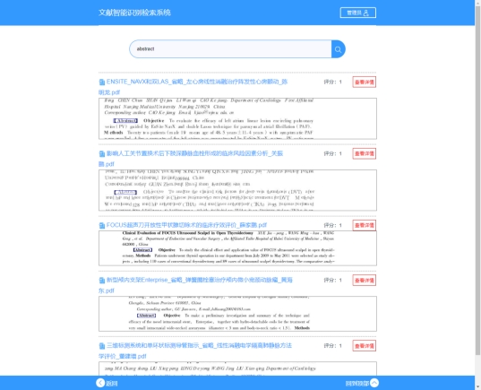
图 4–6 搜索演示 pc端
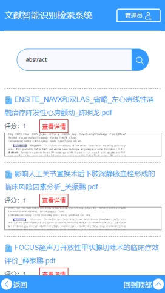
图 4–4- 搜索演示 手机端
4.1.2 详情页面
在上图所示搜索结果栏中，用户点击标题名称或者“查看详情”按钮即可跳转至该详情页面。
详情页面整体设计方案为：顶部为页面标题和pdf原文件下载按钮，下部设计有一个在线查看pdf按钮，下部为匹配结果检索图或pdf在线展示区域。用户通过搜索结果列表进入该页，默认显示该页匹配到的内容的检索图，并会在图中对检索内容进行标注。当用户点击“查看pdf”以后，即可在线查看该pdf文献所有页码内容，当再次点击“查看标注”按钮，再一次显示原文标注内容。
功能演示如下图所示：
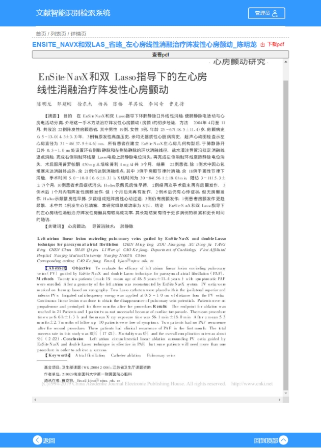
图 4–8 查看详情电脑端-原文检索图
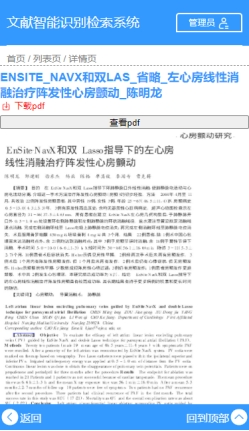
图 4–9 查看详情手机端-原文检索图

图 4–10 查看详情手机端-在线查看pdf文献
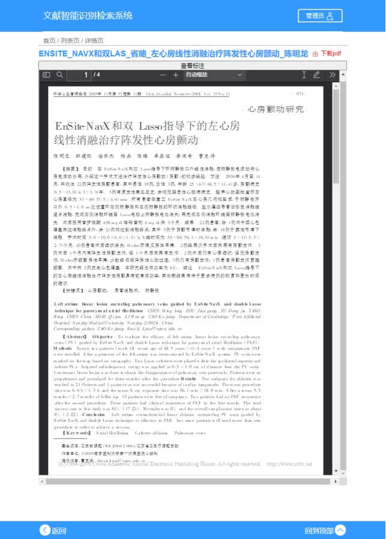
图 4–11 查看详情电脑端-在线查看pdf文献
4.1.3 pdf下载
用户在详情页面点击“下载pdf”按钮即可弹出pdf文件下载页面。
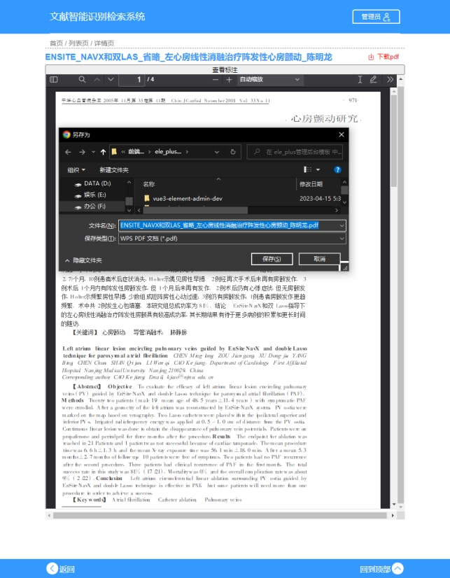
图 4–12 pdf文献下载电脑端
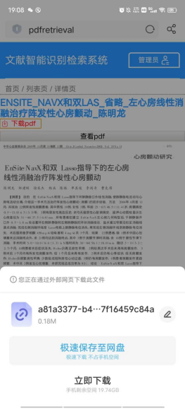 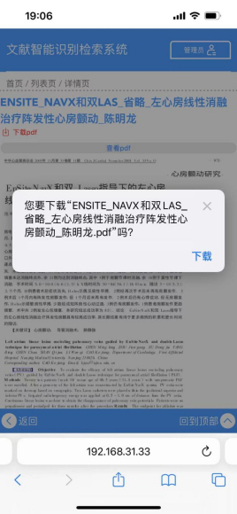
图 4–13 pdf文献下载手机端（左图为Android页面，右图为Ios页面）
4.1.4 管理员注册登录
注册：在管理员注册页面输入要注册的账号信息，点击“注册”即可。
登录：利用账号和密码登录。
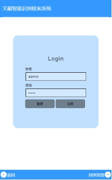
图 4–14 管理员注册登录页面
4.1.5 管理员页面
图 4–15 管理员页面
管理员登录进入管理员页面首页，首页即为文件列表页面，显示数据库中的所有文件信息，包括文件id、文件名、文件大小、文件hash值、上传时间、和删除操作按钮。用户点击删除即可删除对应的数据库pdf文献数据。
删除操作如图所示：
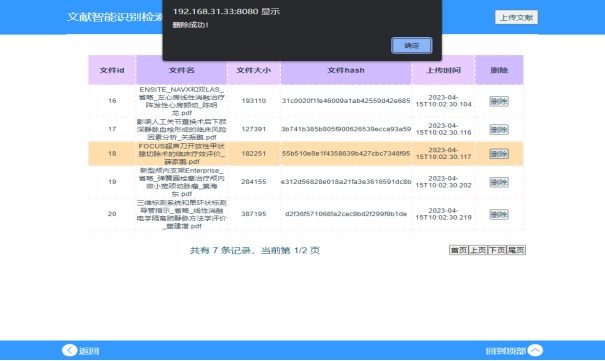
图 4–16 删除文献成功
删除成功以后自动刷新文件列表：
图 4–14- 删除以后文件列表自动刷新
管理员文献上传：管理员在文件选择框中选择本地文件，点击上传即可上传到数据库，并自动识别内容。上传以后自动刷新文件列表。
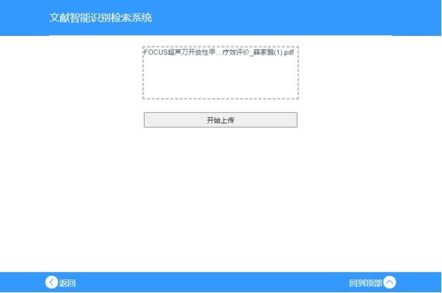
图 4–18 文件上传列表
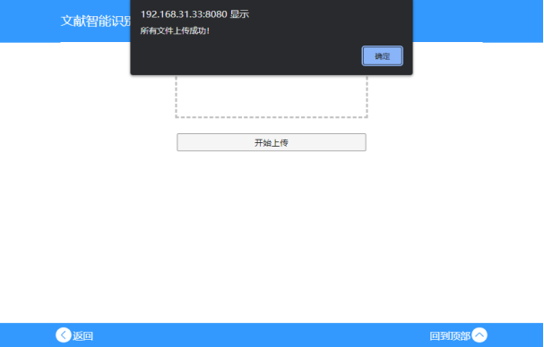
图 4–19 上传成功页面
图 4–20 文件成功自动刷新文件列表